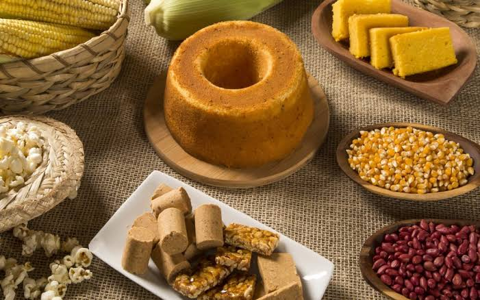
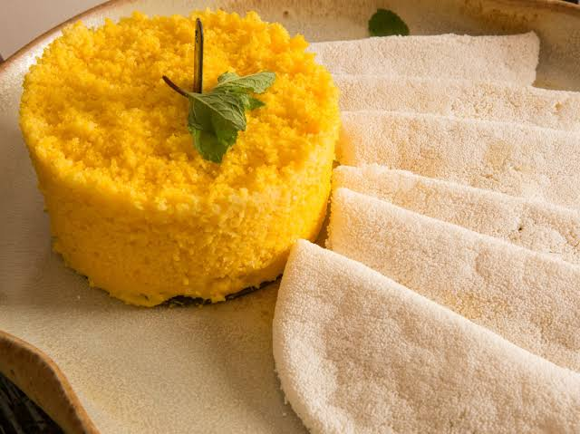
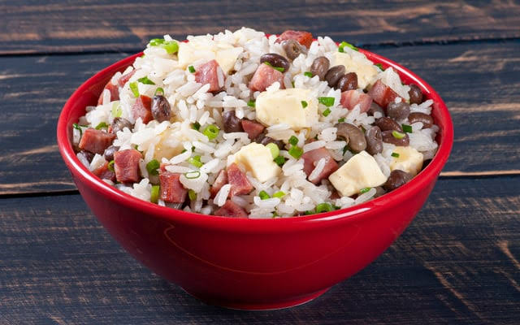
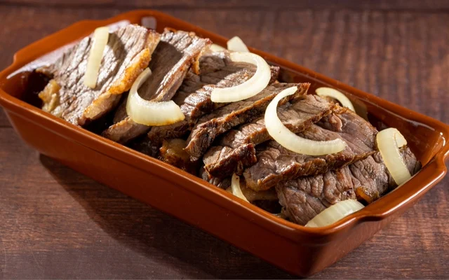

🌵 Sabores que vêm do coração do Nordeste
Descubra pratos tradicionais preparados com ingredientes selecionados e muito carinho.

Descubra pratos tradicionais preparados com ingredientes selecionados e muito carinho.


Tradicional e delicioso.

O clássico nordestino.

Sabor autêntico.
O Raízes do Nordeste nasceu para levar os sabores tradicionais nordestinos para sua mesa, mantendo receitas autênticas e ingredientes de qualidade.